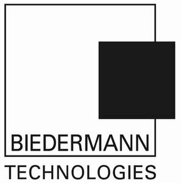

Trade Mark Journal No.2026/007 13 February 2026
UK00004313649 19 December 2025 (5,9,10,35,40,42,45)

International priority date claimed: 30 June 2025
(Germany)
(302025112415.5)
- Class 5
- Bone cement for medical purposes and materials for coating surgical implants.
- Class 9
- Scientific, research, navigation, surveying, photographic, cinematographic, audio-visual, optical, weighing, measuring, signaling, detecting, testing, checking, rescue, and teaching apparatus and instruments; apparatus and instruments for conducting, switching, transforming, accumulating, regulating, or controlling the distribution or use of electricity; Apparatus and instruments for recording, transmitting, reproducing, or processing sound, images, or data; recorded media; downloadable media; computer software; blank digital or analog recording and storage media; computers; Computer peripherals; all of the aforementioned goods, in particular in connection with computer-assisted medical applications, in particular the field of orthopedic surgery, trauma surgery, and neurosurgery.
- Class 10
- Surgical, medical, dental and veterinary apparatus and instruments, in particular instruments and apparatus for orthopaedic surgery, trauma surgery and neurosurgery; implants for trauma surgery made of the artificial materials; implants for neurosurgery made of the artificial materials; surgical implants comprised of artificial materials; robots for medical applications, in particular robots for surgical applications; instruments for inserting implants and handling of implants made of artificial materials, in particular for the insertion of spinal implants made of artificial materials; bone implants made of artificial materials; orthopaedic implants made of artificial materials; spinal implants; medical guidewires; orthopaedic articles; suture materials; instruments for the insertion of bone cement for orthopaedic surgery purposes.
- Class 35
- Advertising; business management, in particular consulting on the organization and management of companies, business management consulting, consulting on management issues, human resources management, assistance in the management of commercial or trading companies, organizational consulting in business matters and in the management of companies; business administration; office functions.
- Class 40
- Custom-manufacture of medical and surgical apparatus and instruments, in particular custom-manufacture specifically designed to the specific needs of customers, in particular in the fields of orthopaedic surgery, trauma surgery and neurosurgery; Custom manufacture of surgical implants made of artificial materials, in particular implants for orthopedic surgery, trauma surgery, and neurosurgery, in particular bone implants and spinal implants made of artificial materials; Manufacture, in particular customer-specific manufacture, of special surgical instruments for inserting and handling implants made of artificial materials, of spinal implants and bone implants made of artificial materials; Production of 3D prints, production, in particular customised production, of 3D print models, in particular in the field of orthopaedic surgery, trauma surgery and neurosurgery, in particular of 3D print models for implants and instruments for inserting and handling implants; Surface finishing, in particular surface treatment, of implants and instruments in the fields of orthopedic surgery, trauma surgery, and neurosurgery.
- Class 42
- Scientific and technological services and research and design relating thereto, in particular in the following fields: orthopedic surgery, trauma surgery and neurosurgery, in particular bone implants made of artificial materials; industrial analysis and research services, in particular in the following fields: orthopedic surgery, trauma surgery and neurosurgery, in particular development of orthopaedic articles made of artificial materials; development of implants made of artificial materials; development of instruments for the insertion and the handling of implants made of artificial materials; engineering services, in particular in the following fields: robotics for medical applications; material development in the following fields: orthopedic surgery, trauma surgery and neurosurgery, in particular bone implants made of artificial materials; material testing, in particular in the following fields: orthopedic surgery, trauma surgery and neurosurgery, in particular bone implants made of artificial materials; conducting of tests of implants and instruments in the following fields: orthopedic surgery, trauma surgery and neurosurgery; providing of technical know-how, in particular in the following fields: orthopedic surgery, trauma surgery and neurosurgery, in particular bone implants made of artificial materials; technical project studies, engineering project management services, in particular in the following fields: orthopedic surgery, trauma surgery and neurosurgery, in particular bone implants made of artificial materials; quality control, in particular in the following fields: orthopedic surgery, trauma surgery and neurosurgery, in particular bone implants made of artificial materials; design and development of computer hardware and software, in particular in the field of orthopaedic surgery, trauma surgery and neurosurgery, in particular in the field of development and manufacture and testing of implants and instruments and in the field of computerised medical applications, in particular for orthopaedic surgery, trauma surgery and neurosurgery; design of 3D models for 3D printing, in particular in the field of orthopaedic surgery, trauma surgery and neurosurgery, in particular in the field of development and manufacture and testing of implants and instruments and in the field of computerised medical applications, in particular for orthopaedic surgery, trauma surgery and neurosurgery.
- Class 45
- Legal services, in particular legal advice and representation, advice on industrial property rights, research into legal matters, administration of industrial property rights, administration of copyrights, monitoring services in the field of intellectual property, conducting research into industrial property rights, evaluation of industrial property rights, sale of industrial property rights, licensing of industrial property rights.
Biedermann Technologies GmbH & Co. KG
Representative: Marks & Clerk LLP